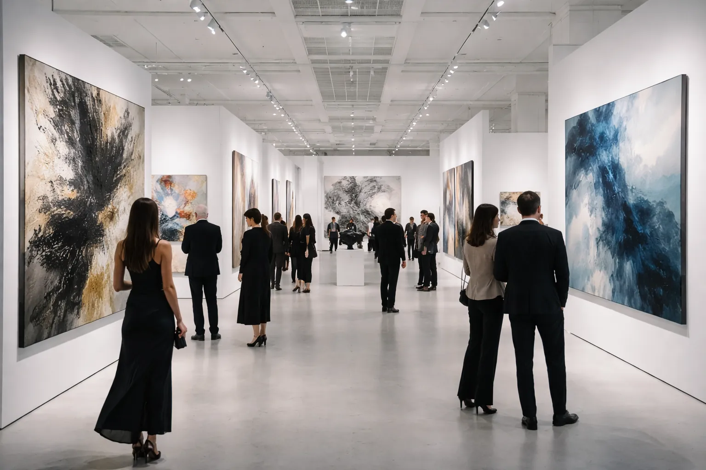
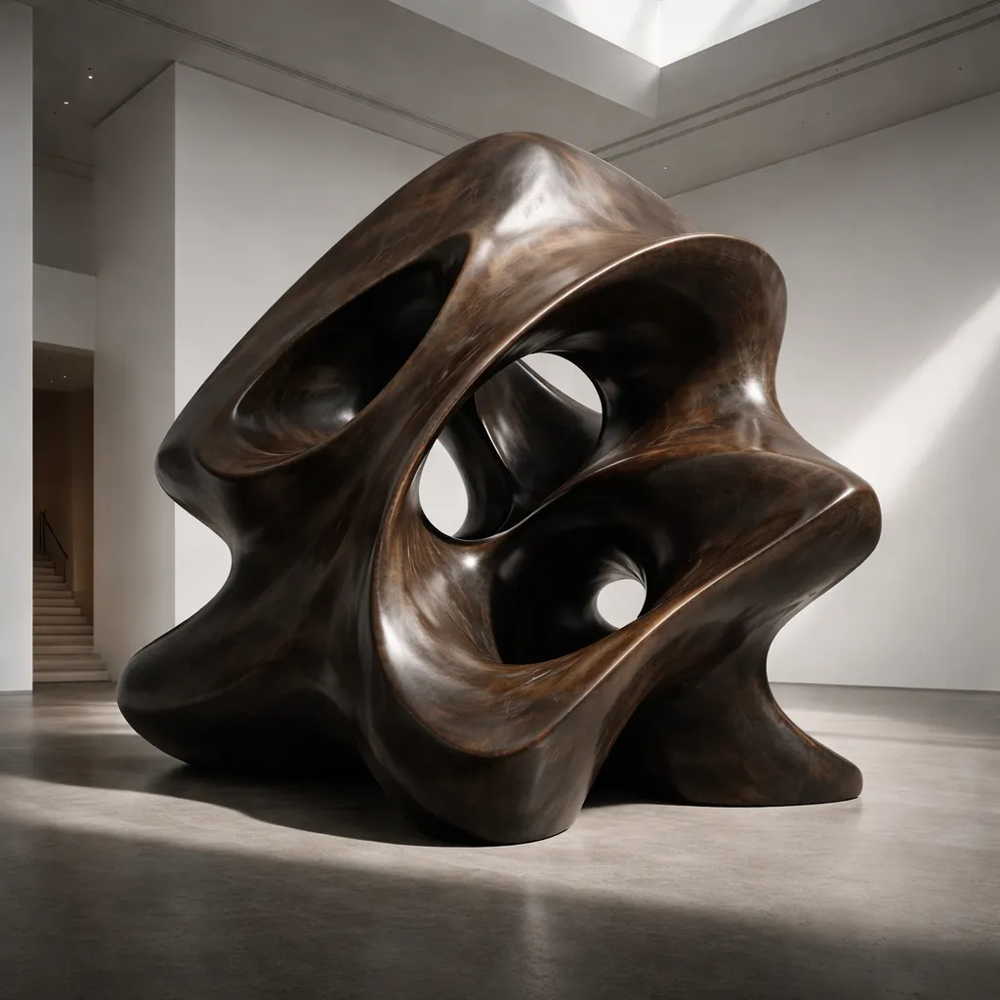
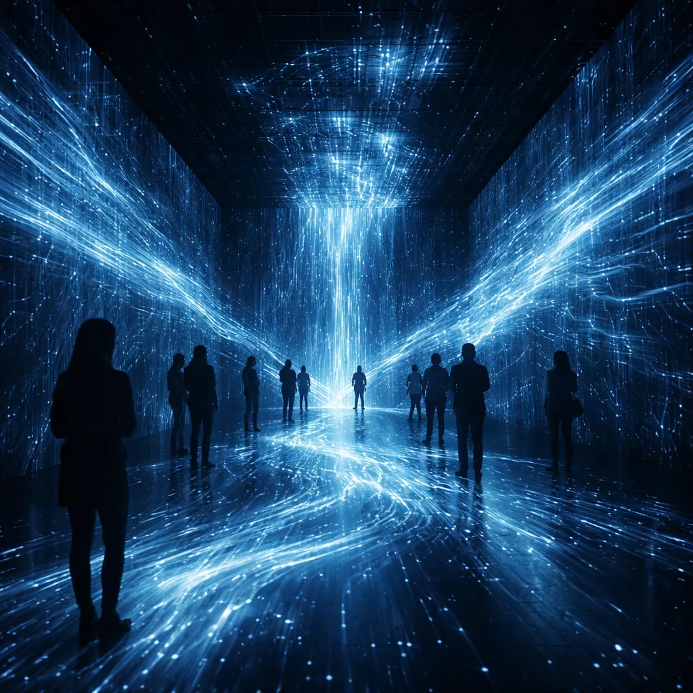
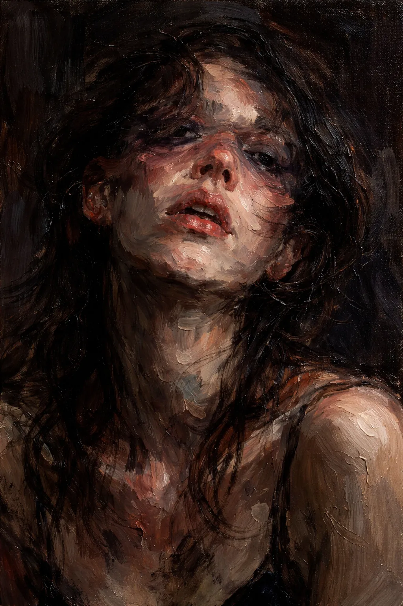
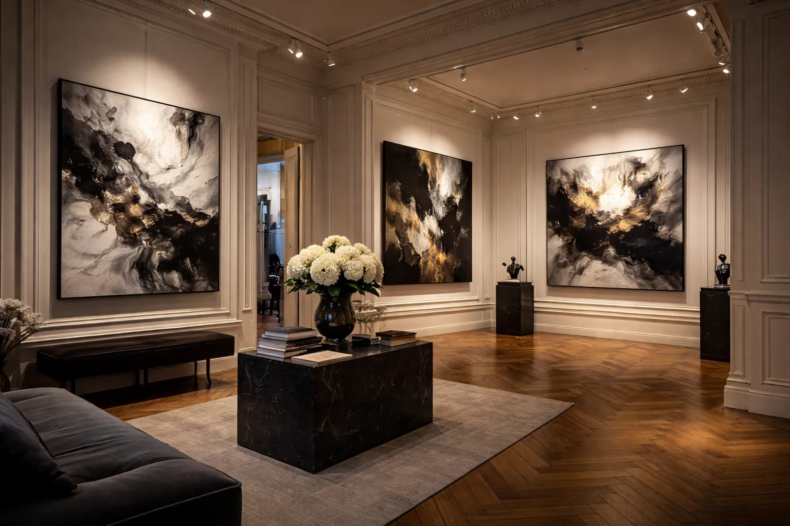
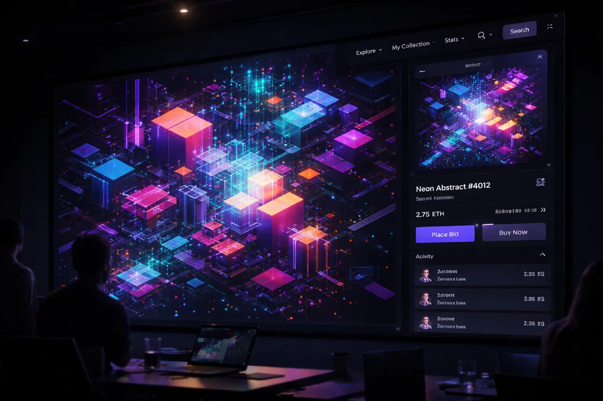

Articles récents

Art Basel 2025 : les œuvres qui ont redéfini les frontières du marché et du goût
Entre NFTs en chute libre, retour aux maîtres anciens et émergence d'artistes du Sud global, Art Basel 2025 a été le miroir d'un monde de l'art en profonde recomposition. Notre analyse des tendances qui façonneront 2026.

Louise Bourgeois : l'œuvre qui réconcilie l'intime et le monumental
Araignées géantes, Cellules, confessions intimes : parcours dans l'œuvre de l'une des sculptrices les plus importantes du XXe siècle.

Refik Anadol : quand les données deviennent matière
Les installations immersives de l'artiste turco-américain envahissent les musées du monde entier. Décryptage d'une œuvre qui fait de l'IA et de la mémoire collective un matériau à part entière.

Lynette Yiadom-Boakye : le roman de ceux qui n'ont jamais existé
La peintre ghanéenne-britannique peuple ses toiles de personnages fictifs d'une présence saisissante. Regard sur une artiste qui réinvente la tradition du portrait.

Les 12 expositions à ne manquer sous aucun prétexte en 2026 à Paris
Du Grand Palais à la Fondation Vuitton, de la Bourse de Commerce au Palais de Tokyo — notre sélection exhaustive de la saison artistique parisienne.

NFT, deux ans après l'effondrement : ce qui reste et ce qui a changé pour toujours
La bulle a éclaté, mais l'art numérique et la blockchain ont durablement transformé les questions d'authenticité, de propriété et de distribution dans le monde de l'art contemporain.